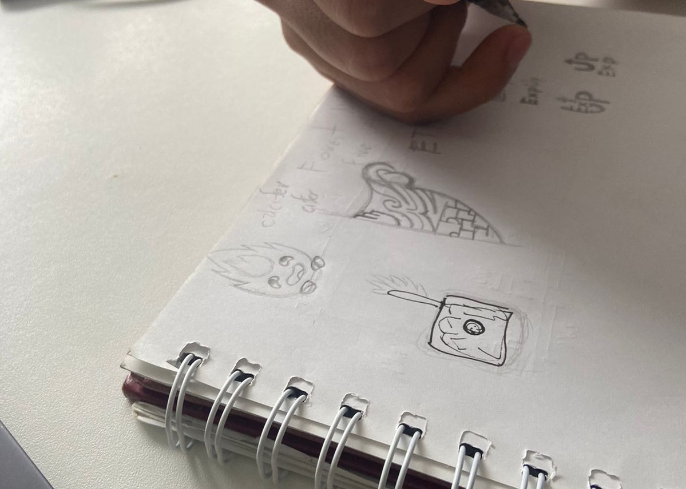

Semana 3: Avance de Bocetos para el proyecto "Niqui"
Durante esta tercera semana, nos enfocamos en avanzar con el diseño del dispositivo "Niqui". El equipo dedicó tiempo a realizar diferentes bocetos, explorando diversas ideas sobre cómo podría ser la forma y funcionalidad del dispositivo. Cada integrante del grupo presentó su propuesta, lo que nos permitió tener una variedad de perspectivas y enfoques creativos para el diseño.
Estos bocetos incluyen conceptos que combinan funcionalidad y estética, pensando en la usabilidad del dispositivo en zonas rurales y su capacidad de integrar los sensores y sistemas de monitoreo. Este ejercicio no solo nos ayudó a visualizar mejor el producto final, sino que también abrió la discusión sobre las mejores opciones tecnológicas y ergonómicas para hacerlo eficiente y práctico en el campo. Este avance ha sido clave para sentar las bases del diseño final de "Niqui", el cual desarrollaremos en las siguientes fases del proyecto.